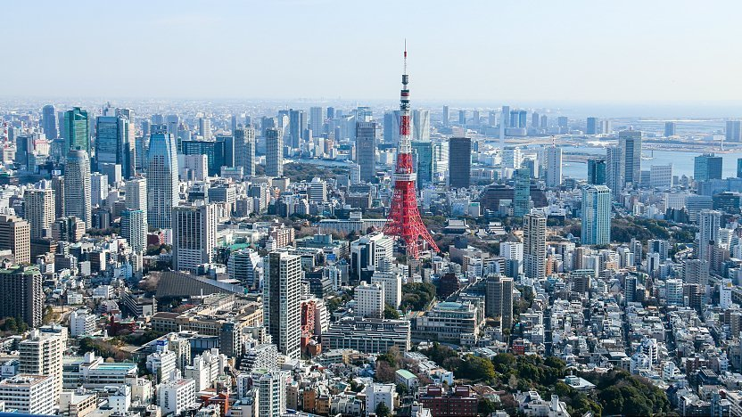
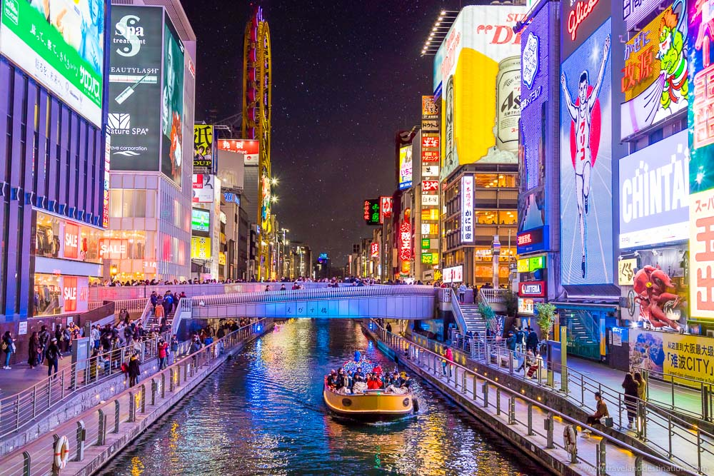

Being the most populous metropolis, Tokyo is an unforgettable destination. Visit Tokyo Disneyland while additionally going sightseeing of the city. Are you a wanderer? Tokyo is the place to go as the area is filled with fascinating architecture!

Being a prior capital of Japan, this city is a site to see. Explore the top attractions in Kyoto such as Enryaku-ji and Kiyomizu-dera. Expect to see palaces, gardens and traditional houses that makes this destination so popular!

Enjoy shopping and the nightlife? Osaka is the place to be. Experience the tasty restaurants while exploring the different landmarks Osaka offers. Being much different to Tokyo, the city provides the public with much entertainment, leaving one absolutely speechless. Visit attractions such as Tsutenkaku Tower and Osaka Aquarium Kaiyukan to experience everything this wonderful city offers!
Do you enjoy nature? Explore the mountains and waters of Hiroshima, offering activities such as skiing, cycling and hiking. The city additionally has mouthwatering dishes that are cannot be missed! Visit the Hiroshima Peace Memorial Museum and Itsukushima as they have continued to be the top rated attractions in Hiroshima!